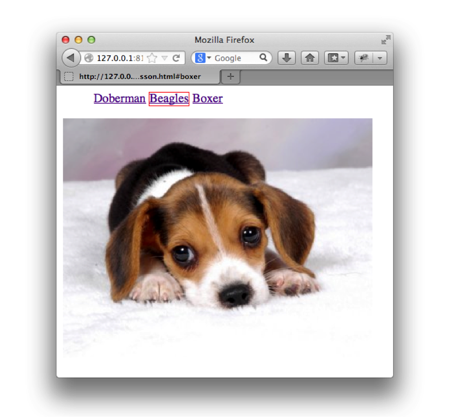

DOM and jQuery page
Learn jQuery and the DOM APIs by building your own version of jQuery and using it to make a basic tabs widget.
Before You Begin
 Click here to join
Click here to join
Bitovi's Slack Community
Join Bitovi's Slack Community to get help on Bitovi University courses or other Angular, React, CanJS and JavaScript problems.
Please ask questions related to jQuery and the DOM in the JS and DOM chat room.
If you find bugs in this training or have suggestions, create an issue or email contact@bitovi.com.
Overview
The end result of this training is to build a basic, progressively enhanced, tabs widget that looks like:

We will be creating simple versions of many of jQuery's most useful methods:
$ = function(selector) { /*...*/ };
$.extend($.prototype, {
html: function(string) { /*...*/ },
val: function(value) { /*...*/ },
text: function(string) { /*...*/ },
find: function(el) { /*...*/ },
next: function() { /*...*/ },
prev: function() { /*...*/ },
parent: function() { /*...*/ },
children: function() { /*...*/ },
attr: function(attr, val) { /*...*/ },
css: function(style, val) { /*...*/ },
width: function() { /*...*/ },
hide: function() { /*...*/ },
show: function() { /*...*/ }
});
Then we will write a tabs widget:
$.fn.tabs = function(){ /*...*/ }
Prerequisites
Creating jQuery requires meta programming (functions that take functions that return functions). We encourage participants to finish the Advanced JavaScript course before beginning this training.